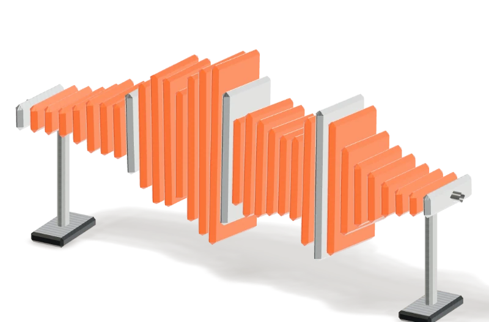
Voice interface
BurnOS
Speak a project note at your desktop, then ask the assistant to find it or turn it into follow-up work.
Independent developer & interviewer
I build software you can speak to and tools that help AI remember. On camera, I ask people what they believe and why.
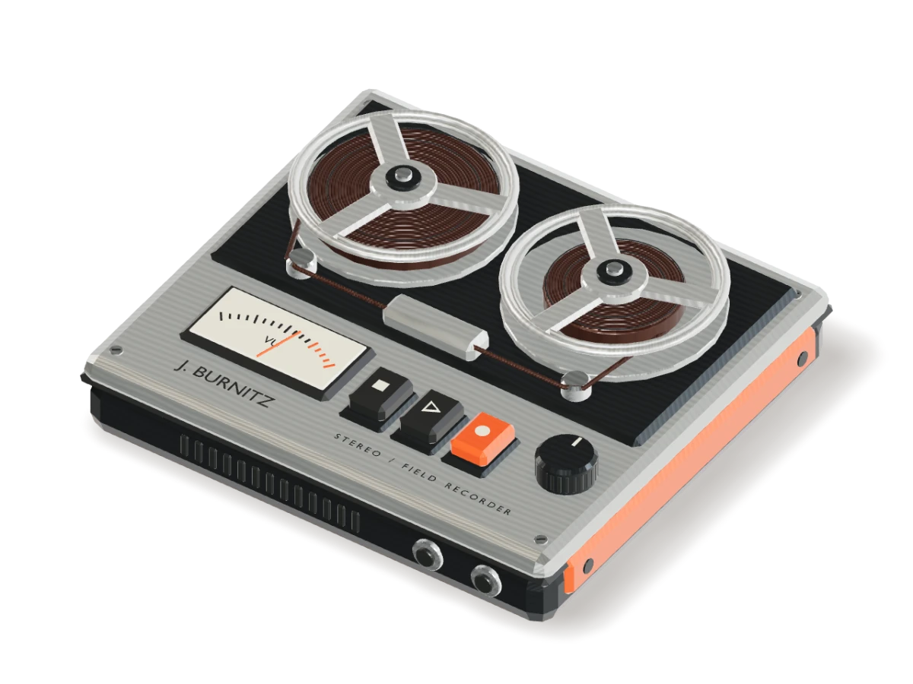
Inside the studio
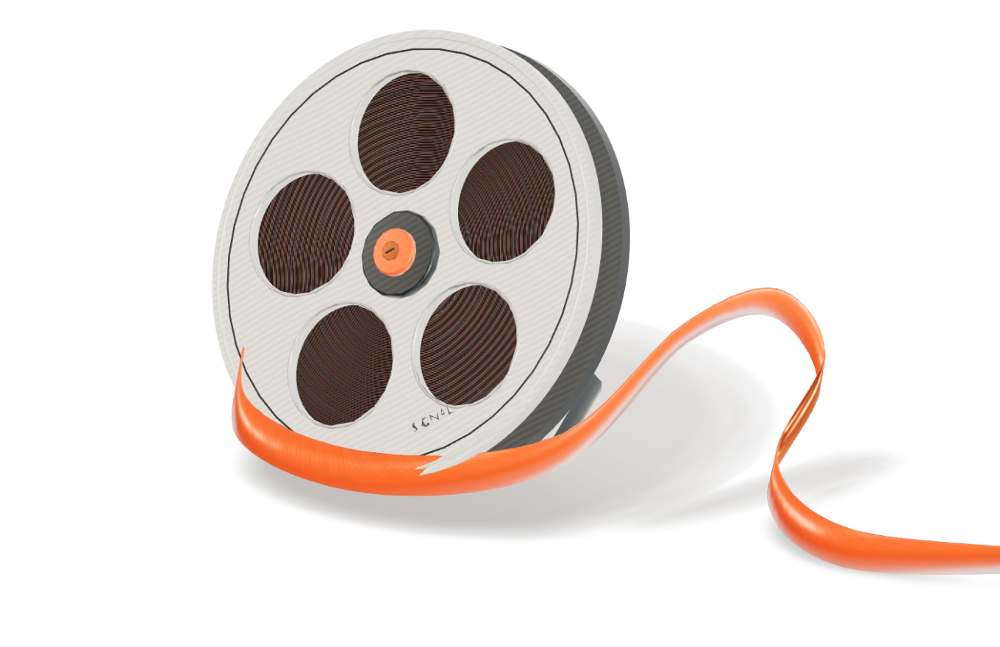
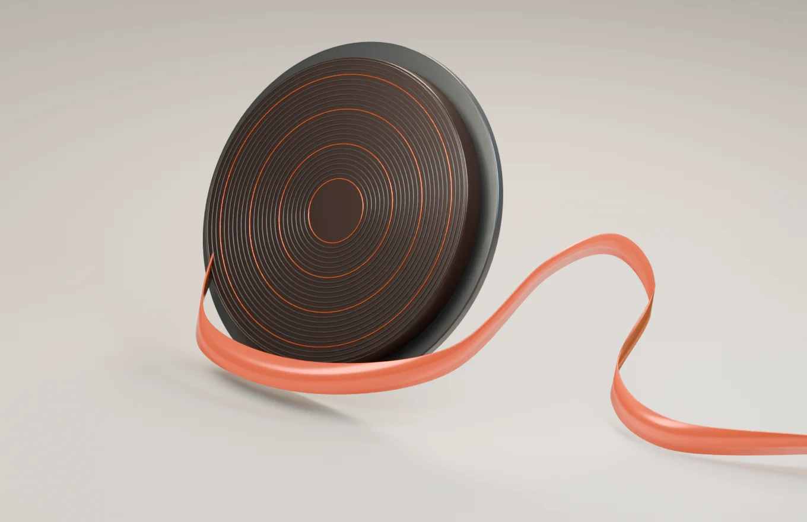

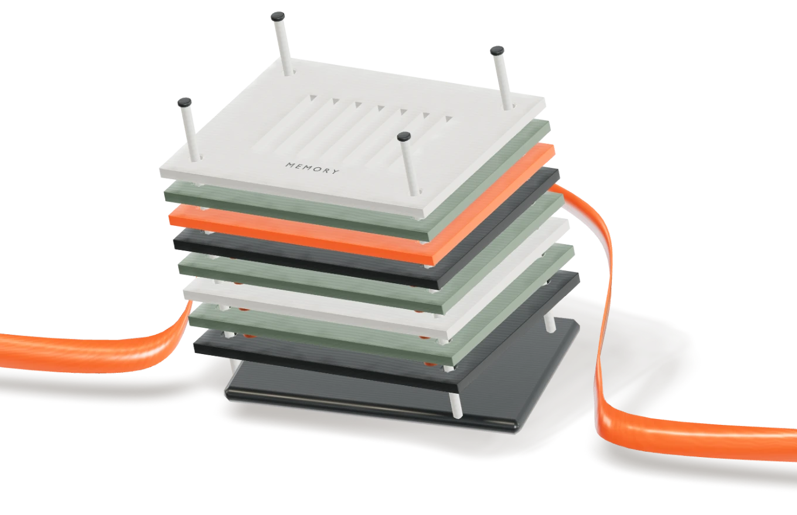
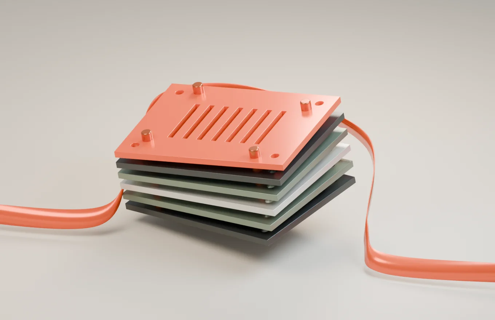

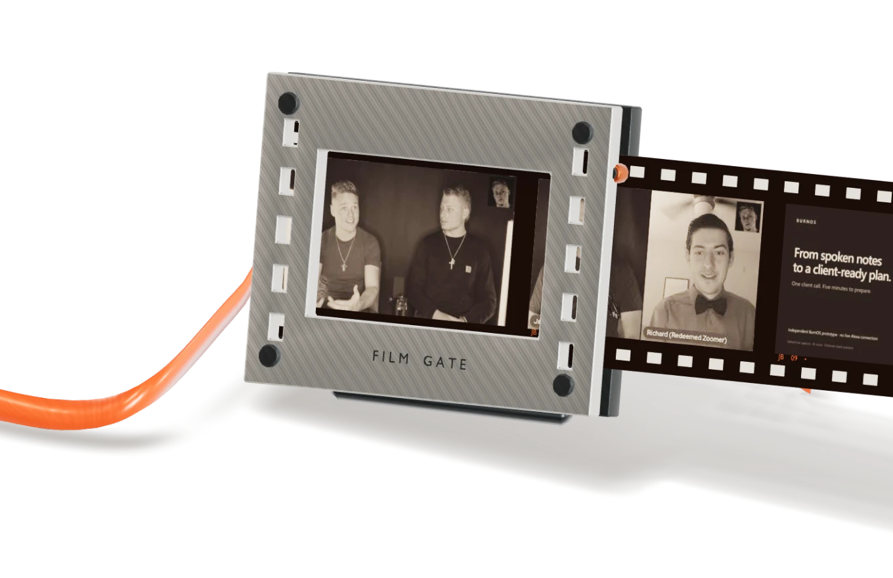
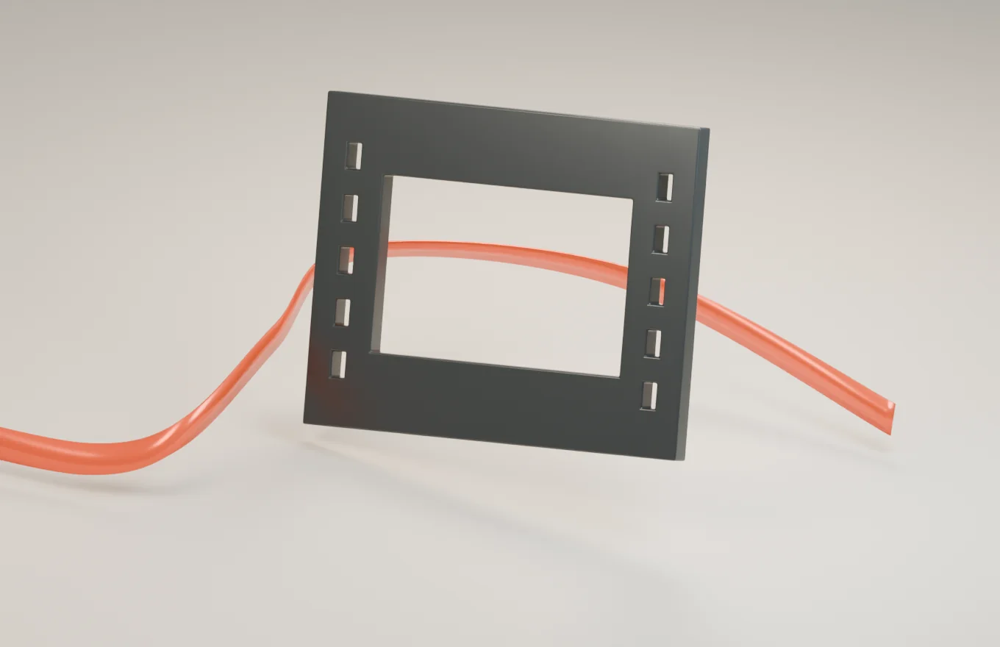

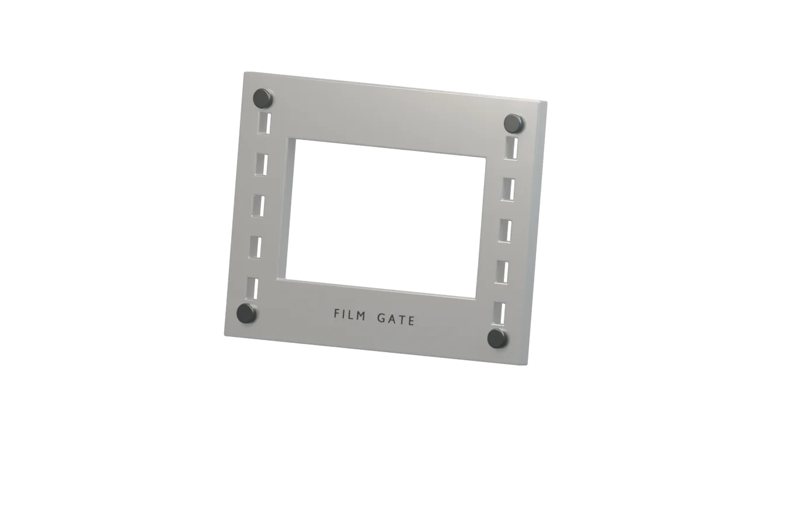
BurnOS starts where a recorder usually stops. You can speak a project note, then ask the assistant to work with it.

Mnemosyne keeps the source behind a memory. The plates pull apart here the way you can trace a remembered detail back to its record.

Some questions belong in a conversation. The film gate carries frames from my interviews and my BurnOS demo.

A silent tracking shot follows the copper ribbon from reel to gate. Generated in Gemini, cut in FilmCraft, and finished in EffectCraft.
Side A Software
What does an AI assistant remember after you close it? For the BurnOS demo, I gave Mnemosyne a fictional workshop called Aurora. One saved detail makes the test easy to check.
Read the demo notes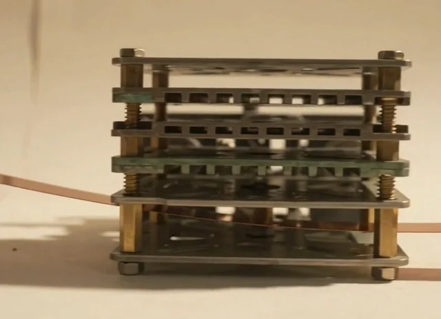
What was the workshop budget?
After the SQLite server restarted, the search returned the same source record. Its ID begins 22be97ee.

Voice interface
Speak a project note at your desktop, then ask the assistant to find it or turn it into follow-up work.
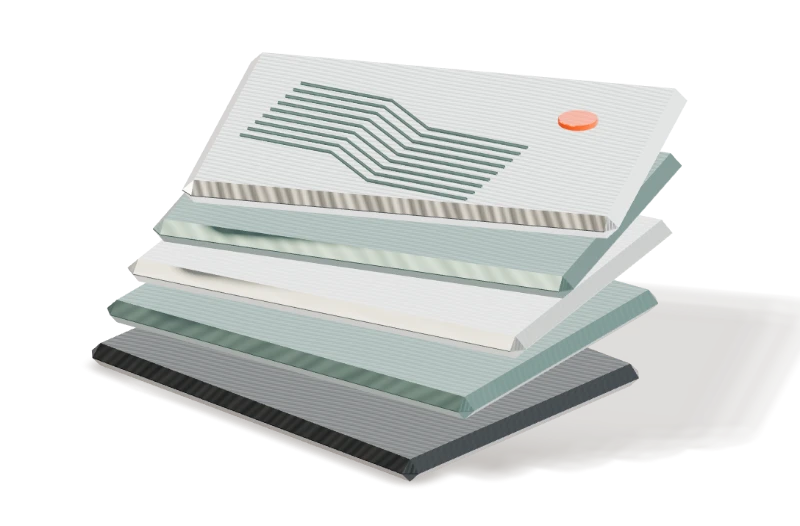
Agent memory
An open-source memory system that keeps the original record behind an agent’s answer. Try storing and recalling the Aurora workshop in the quickstart.
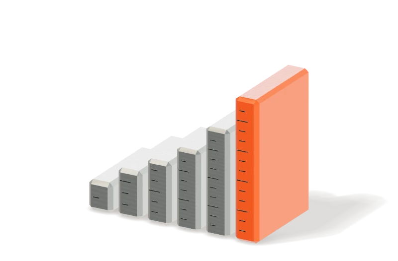
Memory evaluation
Did the system find the right record? Did it answer correctly from that record? Mnemetric compares memory systems and explains how those results are measured.
Side B Film program
On my channel, I sit down with people who think deeply about belief. On BurnFilmz, I show what I’ve been building.
Jake Burnitz on YouTubeProject film BurnFilmz
One client call, five minutes to prepare. Watch a spoken brief turn into notes, a call agenda, and a follow-up plan.
BurnFilmz on YouTube
Output Patch bay
Follow a cable to the code, the films, or the work itself.